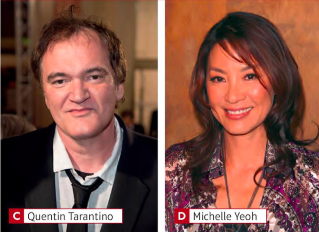

a) She was very poor when she was a child.
b) She was a millionaire at the age of twenty-three.
c) She hates chewing gum.
a) Her childhood was on an apple tree farm.
b) She was a songwriter at five years old.
c) Her grandmother was an opera singer.
a) He hates violence.
b) He wants to stop making movies at age eighty.
c) His mother was part Cherokee, part Irish.
a) She was a singer before she was an actress.
b) She was in a James Bond film.
c) She was the winner of the Miss Malasia beuty contest in 1983.
a) His hobbies at school were acting, sport and painting.
b) He rides a motorbike around London.
c) He was a French teacher before he was an actor.
a) He's from Spain.
b) He was a very good student.
c) He always plays football with his hair wet.
Is Lionel Messi the best footballer in the world? A lot of people think so. Messi was born in Argentina. At school he was a very good student, but there was a problem: he was very small. Doctors in Spain helped him and now he lives in Spain and plays football for Barcelona. Interesting fact? He always plays with his hair wet.
Oprah Winfrey’s life is amazing. She was born in 1954 in Mississippi, in the US. Oprah’s parents were very poor, but at the age of thirty-two she was a millionaire from her radio and TV shows. She is also famous for her book club and her work with poor girls. Interesting fact? Oprah hates chewing gum.
Benedict Cumberbatch is an English actor, famous for Sherlock on the BBC and also many films, including The Hobbit and Star Trek. At school, his hobbies were acting, sport and painting. He is very popular in China and Korea. Interesting facts: he rides a motorbike around London. He was an English teacher for a year before he was an actor.
Taylor Swift is an American singer-songwriter. She was born in 1989 and her childhood was on a Christmas tree farm. Her first hobbies were horse riding and singing. She was a songwriter from the age of five and her first number one song was Our Song when she was eighteen years old. Her songs are about her life and loves. Interesting facts: her grandmother was an opera singer and her favourite number is thirteen.
Actress Michelle Yeoh was born in Malaysia. She was a dancer before she was an actress. As an actress, she was first famous in the West for her role in the James Bond film Tomorrow Never Dies, but Yeoh’s first films weren’t American – they were from Hong Kong. Interesting fact: she was the winner of the Miss Malaysia beauty contest in 1983.
Quentin Tarantino is a director, actor and producer and writer of movies such as Pulp Fiction and the Kill Bill films. His movies often have a lot of violence, but Tarantino says he hates violence. He plans to stop making movies at age sixty and write books instead. Interesting fact: His mother was part Irish and part Cherokee Indian.
1. you / born in this city? Were you born in this city?
2. you / born in the summer?
3. you / a very quiet child?
4. you / afraid of the dark when you were a child?
5. your favourite teacher / a man or a woman?
6. your parents / childhood friends?
7. your grandfather / born in another country?
8. your grandmother / a good cook?
A: Were you born in this city?
B: Yes, I was. And you?
A: Me too.
people - music - activity or sport - TV programme - food
A: Who were your favourite people?
B: One of my favourite people was my uncle Luciano. He was really funny.